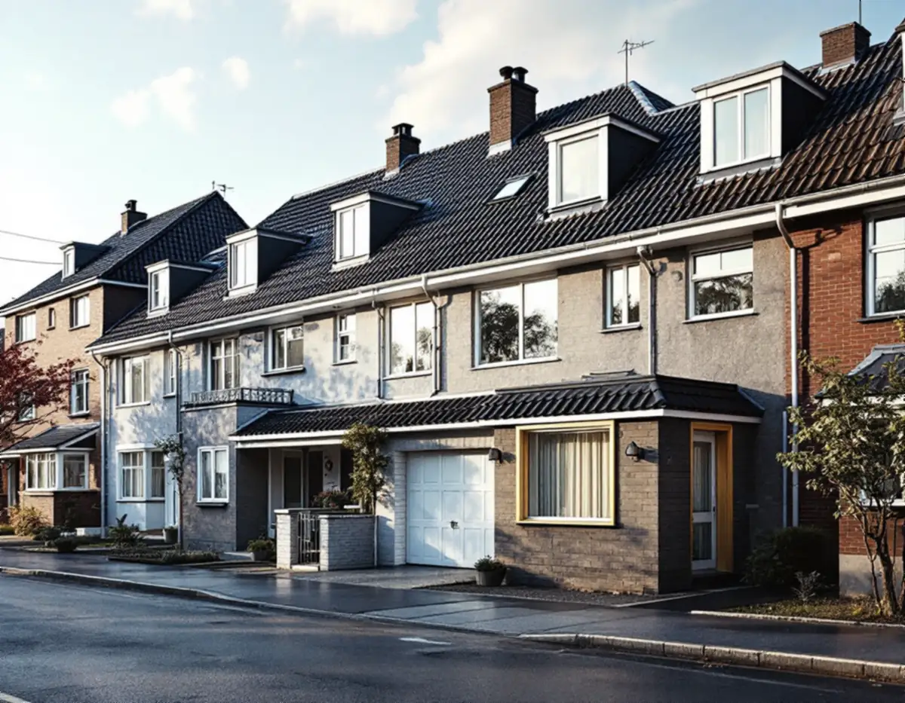
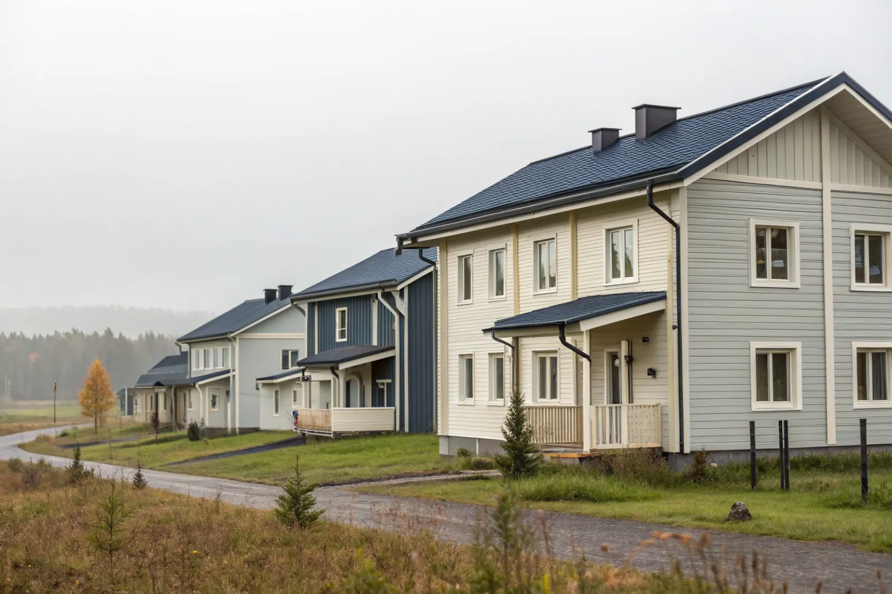
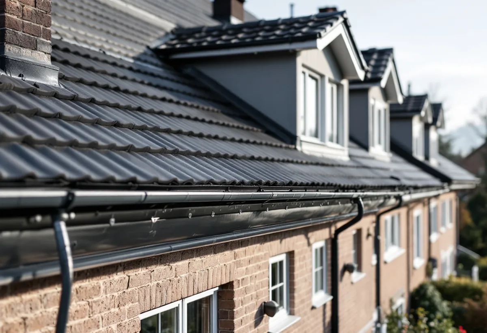

Takbyte i Kista
Byte av tegel-, betong- och plåttak.
Takbyte i Kista →
Kista i norra Stockholm är mest känt för sin IT-stad, men här finns också radhus, småhus och bostadsrättsföreningar i Kista, Husby och Akalla.
Skicka gärna en bild på taket.
Något blev fel. Kontrollera uppgifterna eller ring 08 12 410 276.
Vi tittar på jobbet på plats innan du får offert.
Du ser vad som ingår och vad det kostar.
Vi drar av ROT direkt och sköter ansökan.
Geal Entreprenad AB, Bromma. Org.nr 559303-7566.
Vi är takläggare i Kista för radhus, föreningar och mindre fastigheter.
Kista, Husby och Akalla byggdes till största delen under 1970-talet på mark som tidigare hörde till Järvafältet. Bebyggelsen är i huvudsak flerbostadshus, men här finns också radhus och mindre grupper av småhus från samma tid.
Taken från 1970-talet är ofta låglutande med papp eller plåt, och många har redan fått ett nytt tätskikt. Med låg lutning blir skarvar, takbrunnar och plåtavtäckningar avgörande för att taket ska hålla tätt.
Nära Kista ligger Helenelund i Sollentuna och villaområdena i Spånga, som vi också arbetar i. Har ni flera byggnader i en förening tar vi gärna ett samlat grepp om alla tak.
Oavsett om du behöver ett komplett takbyte eller en riktad renovering ger vi en tydlig bedömning och offert. Vi arbetar även i grannområden – se alla områden vi arbetar i.


Papptak och plåttak med låg lutning åldras på andra sätt än branta tegeltak. Typiska skador är blåsor och sprickor i pappen, glipor vid uppvik mot väggar och ventilationshuvar samt stående vatten där underlaget sjunkit. På radhusen är plåtavtäckningar på brandväggar och takfötter vanliga läckagepunkter.
Husen ligger i öppna lägen nära Järvafältet där vinden tar i. Lösa plåtdetaljer och dåligt fästa nockar blir ofta synliga efter en stormvinter, och då lönar det sig att se över infästningen innan skadorna växer.
I föreningar och samfälligheter är det styrelsen som beslutar om tak. Vi lämnar en besiktningsrapport och ett kostnadsförslag som går att ta upp på stämman, och planerar arbetet så att de boende påverkas så lite som möjligt.
Kista tillhör Stockholms stad. På radhus är byte av tätskikt, material eller kulör normalt lovfritt. På flerbostadshus inom detaljplan kräver en fasadändring bygglov om taket vetter mot gata eller annan allmän plats, och höjs taket krävs alltid lov.
Byte av tegel-, betong- och plåttak.
Takbyte i Kista →Riktade åtgärder som förlänger takets liv.
Takrenovering i Kista →Bedömning av skick inför beslut.
Takbesiktning i Kista →Nytt ytskydd på plåttak.
Takmålning i Kista →Skonsam tvätt och mossbehandling.
Taktvätt i Kista →Nytt plåttak och plåtarbeten.
Plåttak i Kista →Vi utgår från Bromma och når Kista via Spånga på kort tid. Det gör det enkelt att komma ut på besiktning och följa projektet.
Läs mer om tak på villa eller jämför takbyte och takrenovering innan du bestämmer dig.
Vi arbetar även i Spånga.
Takläggare i Spånga →Vi arbetar även i Sollentuna.
Takläggare i Sollentuna →Vi arbetar även i Järfälla.
Takläggare i Järfälla →Vi arbetar även i Sundbyberg.
Takläggare i Sundbyberg →Eller ring 08 12 410 276, mån–fre 08–17.
Skicka gärna en bild på taket.
Något blev fel. Kontrollera uppgifterna eller ring 08 12 410 276.